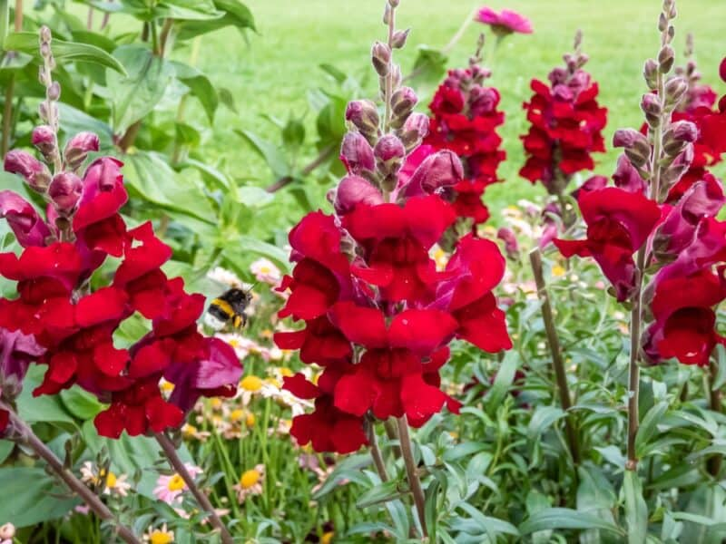

Meaning: Presumption
Origin
Snapdragon’s link to presumption may derive from a medieval fashion practice: maidens would wear snapdragons in their hair to show they were not interested in unsolicited attention from men. The flower warned young men against presumption in a subtle and elegant way.
Gallery
